배우기 전에 먼저 해 보세요. 틀려도 괜찮아요.
Über wen sprecht ihr?라고 물으면 무엇으로 답할까요?
사람을 물을 때는 전치사와 wen을 써요.
Auf dich kann ich mich verlassen.은 무슨 뜻일까요?
sich verlassen auf는 '~을 믿고 의지하다'예요.
B1.1 Im Gespräch · Lektion 8
관계와 우정
음성은 준비 중이에요. 듣기 단추와 받아쓰기는 음성이 올라오면 쓸 수 있어요. 그동안은 글을 읽으면서 공부해요.
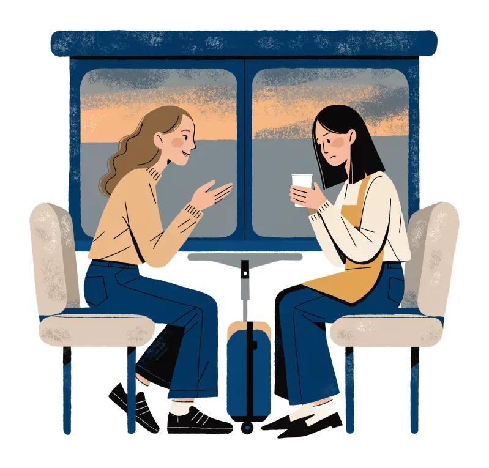
사람 사이의 일은 느낌을 말해야 풀려요. 무엇이 기쁜지, 무엇에 화가 났는지, 무엇을 기다렸는지 말하려면 동사와 짝을 이루는 전치사를 알아야 해요. 이 과에서는 sich ärgern über, warten auf 같은 말을 넓히고, darüber, darauf와 Worüber? Über wen?을 배워요. 오해를 풀고 사과하는 말도 익혀요.
문법 Verben mit Präpositionen, darauf, darüber, dass …, Worüber? Über wen?
과제대학새 도시에서 친구 사귄 경험을 글로 쓰기
과제직장동료와의 오해를 대화로 풀기
이 과를 마치면 사람 사이의 일을 이야기하고, 감정을 표현하고, 오해를 풀 수 있어요.
이 과에서 쓸 말이에요.
배우기 전에 먼저 해 보세요. 틀려도 괜찮아요.
Über wen sprecht ihr?라고 물으면 무엇으로 답할까요?
사람을 물을 때는 전치사와 wen을 써요.
Auf dich kann ich mich verlassen.은 무슨 뜻일까요?
sich verlassen auf는 '~을 믿고 의지하다'예요.
Lektion 7의 낱말 다섯 개를 다시 떠올려 보세요.
2월의 일요일 저녁, 라이프치히에서 돌아오는 기차 안이에요. Jiu와 Lena는 주말에 라이프치히를 보고 왔어요. Lena는 가을에 그곳으로 가기로 마음을 굳혔어요.
들으면서 찾아보세요. Jiu는 프랑크푸르트에 처음 왔을 때 무엇 때문에 속상했나요?
2월 말의 월요일 오전, 회사 부엌이에요. Dohyun은 지난주에 Frau Hoffmann에게 결정을 알렸어요. Markus가 오늘따라 말이 없어요.
들으면서 찾아보세요. Dohyun은 함부르크 일을 어떻게 하기로 했나요?
어학원의 마지막 수업이에요. Sora는 1월에 B1 시험에 붙었다는 소식을 받았어요. Frau Becker와 이야기해요.
들으면서 찾아보세요. Frau Becker는 Freund와 Bekannter가 어떻게 다르다고 하나요?
세 대화를 듣고 답하세요.
Lena는 라이프치히에 가는 것을 어떻게 느끼나요?
Jiu hat am Anfang im Kurs viele Leute angesprochen.
너무 수줍어서 먼저 말을 걸지 못했어요.
Jiu는 어떻게 사람들을 알게 됐나요?
Markus는 무엇 때문에 서운했나요?
Markus findet es schlecht, dass Dohyun in Frankfurt bleibt.
남는다니 기쁘다고 했어요.
Dohyun은 함부르크 일을 어떻게 하기로 했나요?
Frau Becker의 말로는 Freund는 어떤 사람인가요?
Sora trifft sich jede Woche mit Marta.
낱말 50개예요. 명사는 der, die, das를 색으로 구분했어요.
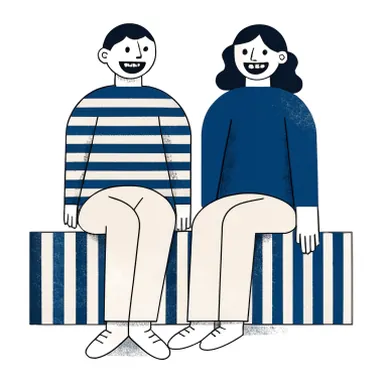
die Freundschaft, die Freundschaften 우정
Unsere Freundschaft ist mir wichtig.우리 우정은 저에게 소중해요.
die Beziehung, die Beziehungen 관계
Wir haben eine gute Beziehung.우리는 사이가 좋아요.
befreundet 친구 사이인
Wir sind seit zwei Jahren befreundet.우리는 2년 전부터 친구예요.
der Bekannte, die Bekannten 아는 사람
Er ist ein Bekannter von mir.그 사람은 제가 아는 사람이에요.
der Kontakt, die Kontakte 연락, 사람들과의 만남
Ich habe wenig Kontakt zu den Nachbarn.저는 이웃들과 별로 왕래가 없어요.
in Kontakt bleiben 연락하며 지내다
Wir bleiben in Kontakt.우리는 계속 연락하며 지내요.
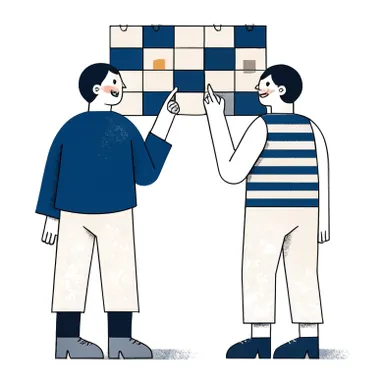
sich verabreden (hat sich verabredet) 만날 약속을 하다
Wir verabreden uns für Samstag.우리는 토요일에 만나기로 해요.
sich anfreunden (hat sich angefreundet) 친구가 되다
Ich habe mich mit Marta angefreundet.저는 Marta와 친구가 됐어요.
das Vertrauen 믿음
Vertrauen braucht Zeit.믿음이 생기려면 시간이 걸려요.
sich verlassen auf (du verlässt dich, hat sich verlassen) ~을 믿고 의지하다
Auf dich kann ich mich verlassen.당신은 믿을 수 있어요.
verbringen (hat verbracht) (시간을) 보내다
Wir verbringen viel Zeit zusammen.우리는 많은 시간을 함께 보내요.
die Gemeinsamkeit, die Gemeinsamkeiten 닮은 점, 공통점
Wir haben viele Gemeinsamkeiten.우리는 닮은 점이 많아요.
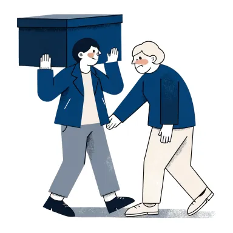
hilfsbereit 잘 도와주는
Meine Nachbarin ist sehr hilfsbereit.제 이웃은 남을 잘 도와줘요.
humorvoll 재치 있는
Markus ist humorvoll.Markus는 재치가 있어요.
offen 마음이 열린, 숨기지 않는
Lena ist ein offener Mensch.Lena는 마음이 열린 사람이에요.
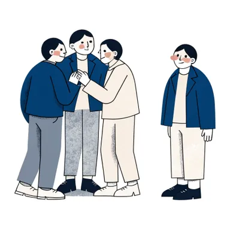
schüchtern 수줍은
Am Anfang war ich sehr schüchtern.처음에는 아주 수줍었어요.
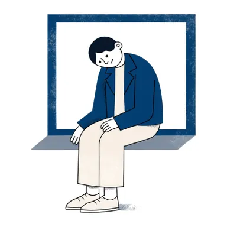
einsam 외로운
In den ersten Monaten war ich einsam.첫 몇 달은 외로웠어요.
sympathisch 호감이 가는
Der neue Kollege ist sympathisch.새 동료는 호감이 가요.
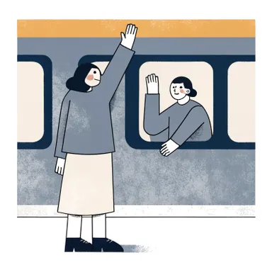
der Abschied, die Abschiede 작별
Der Abschied war schwer.헤어지기가 힘들었어요.
das Gefühl, die Gefühle 느낌, 감정
Ich habe ein gutes Gefühl.느낌이 좋아요.
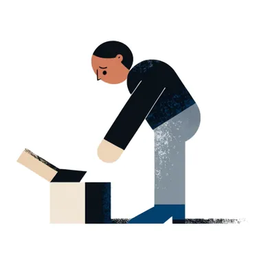
enttäuscht 서운한, 실망한
Ich bin ein bisschen enttäuscht.조금 서운해요.
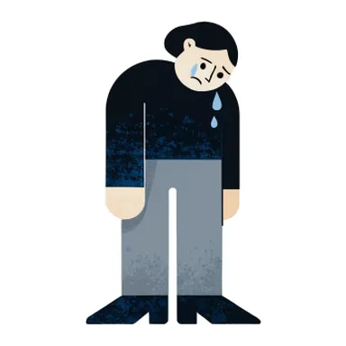
traurig 슬픈
Ich bin traurig, dass du gehst.떠난다니 슬퍼요.
froh 기쁜, 다행으로 여기는
Ich bin froh, dass wir gesprochen haben.이야기를 나눠서 다행이에요.
glücklich 행복한
Sie sieht glücklich aus.그 사람은 행복해 보여요.
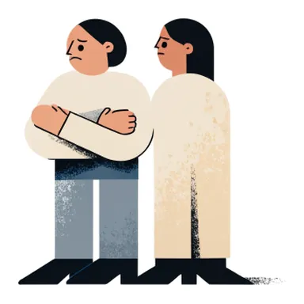
beleidigt 마음이 상한
Er war kurz beleidigt.그 사람은 잠깐 마음이 상했어요.
dankbar 고마워하는
Ich bin dir sehr dankbar.정말 고맙게 생각해요.
sich aufregen über (hat sich aufgeregt) ~에 화를 내다
Reg dich nicht darüber auf!그 일로 화내지 마요!
verzeihen (hat verziehen) 용서하다
Kannst du mir verzeihen?저를 용서해 줄 수 있어요?
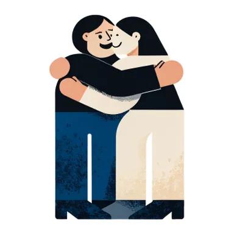
sich versöhnen (hat sich versöhnt) 화해하다
Wir haben uns wieder versöhnt.우리는 다시 화해했어요.
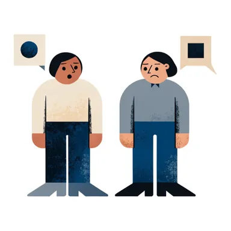
das Missverständnis, die Missverständnisse 오해
Das war ein Missverständnis.그건 오해였어요.
missverstehen (hat missverstanden) 오해하다
Du hast mich missverstanden.제 말을 오해했어요.
die Absicht, die Absichten 의도
Das war keine Absicht.일부러 그런 게 아니었어요.
aus Versehen 실수로
Ich habe es aus Versehen gelöscht.실수로 지웠어요.
der Vorwurf, die Vorwürfe 비난
Das ist kein Vorwurf.탓하려는 게 아니에요.
verletzen (hat verletzt) 상처 주다
Ich wollte dich nicht verletzen.상처 주려던 게 아니었어요.
böse 화난
Bist du mir böse?저한테 화났어요?
lächeln (hat gelächelt) 미소 짓다
Sie lächelt immer.그 사람은 늘 웃고 있어요.
denken an (hat gedacht) ~을 생각하다
Ich denke oft an meine Familie.저는 가족 생각을 자주 해요.
Angst haben vor ~이 두렵다
Ich habe Angst vor der Prüfung.시험이 두려워요.
nachdenken über (hat nachgedacht) ~을 곰곰이 생각하다
Ich denke über das Angebot nach.그 제안을 곰곰이 생각하고 있어요.
achten auf (hat geachtet) ~에 신경 쓰다
Ich achte auf meine Gesundheit.저는 건강에 신경 써요.
abhängen von (hat abgehangen) ~에 달려 있다
Das hängt vom Wetter ab.그건 날씨에 달려 있어요.
sich vorbereiten auf (hat sich vorbereitet) ~을 준비하다
Ich bereite mich auf das Gespräch vor.면접을 준비하고 있어요.
darüber 그것에 대해
Wir sprechen morgen darüber.그건 내일 이야기해요.
darauf 그것을 (기다리다, 기대하다)
Ich freue mich darauf.그게 기대돼요.
daran 그것을 (생각하다, 기억하다)
Daran habe ich nicht gedacht.그 생각을 못 했어요.
davon 그것에 대해, 그것을
Ich träume oft davon.저는 그 꿈을 자주 꿔요.
davor 그것을 (두려워하다)
Davor habe ich Angst.그게 두려워요.
Worüber? 무엇에 대해?
Worüber ärgerst du dich?무엇 때문에 화가 났어요?
Über wen? 누구에 대해?
Über wen sprecht ihr?누구 이야기를 해요?
이 과의 낱말로 여덟 문제를 풀어요.
물건과 일은 da가 붙은 말로, 사람은 전치사와 대명사로 받아요.
da가 붙은 말이 뒤에 오는 문장 전체를 미리 가리켜요.
규칙
A2.2에서 warten auf, sich interessieren für를 배웠어요. 느낌과 생각을 말하는 동사에는 이런 짝이 특히 많아요. 전치사는 뜻으로 고를 수 없어서 동사와 함께 외워야 해요. 전치사에 따라 격도 정해져요. über, für, um 뒤에는 Akkusativ가, mit, von, vor, bei 뒤에는 Dativ가 와요. auf는 거의 Akkusativ와 쓰고, an은 동사마다 달라요. denken an은 Akkusativ, teilnehmen an은 Dativ와 써요.
| 동사 | 격 | 보기 |
|---|---|---|
| sich ärgern über | Akk. | über den Lärm |
| sich freuen auf | Akk. | auf den Urlaub |
| denken an | Akk. | an die Familie |
| Angst haben vor | Dat. | vor der Prüfung |
| abhängen von | Dat. | vom Wetter |
| sprechen mit | Dat. | mit dem Kollegen |
주의 같은 동사가 전치사에 따라 뜻이 달라지기도 해요. sich freuen auf는 앞으로 올 일을 기다리는 것이고, sich freuen über는 지금 있거나 이미 있었던 일을 기뻐하는 것이에요. Ich freue mich auf den Urlaub. Ich freue mich über das Geschenk.
규칙을 보고 바로 확인해 보세요.
Ich habe Angst … der Prüfung. 빈칸에 알맞은 말은 무엇인가요?
규칙
앞에서 말한 물건이나 일을 다시 가리킬 때는 da와 전치사를 붙여서 써요. über는 darüber, auf는 darauf, an은 daran이 돼요. 전치사가 모음으로 시작하면 사이에 r가 들어가요. von은 davon, vor는 davor, mit는 damit, für는 dafür예요. 사람을 가리킬 때는 이렇게 하지 않고 전치사와 대명사를 써요.
| 가리키는 것 | 보기 |
|---|---|
| 물건, 일 | Ich warte auf den Brief. Ich warte darauf. |
| 사람 | Ich warte auf Markus. Ich warte auf ihn. |
| 물건, 일 | Ich denke an die Reise. Ich denke daran. |
| 사람 | Ich denke an meine Eltern. Ich denke an sie. |
주의 da가 붙은 말은 문장 맨 앞에 자주 와요. 그러면 바로 뒤에 동사가 와요. Darüber sprechen wir später. Davor musst du keine Angst haben.
규칙을 보고 바로 확인해 보세요.
Der Urlaub beginnt bald. Ich freue mich … 뒤에 올 말은 무엇인가요?
규칙
전치사와 짝을 이루는 동사 뒤에 명사가 아니라 문장이 올 때가 있어요. 그때는 da가 붙은 말을 앞 문장에 넣고, 쉼표 뒤에 dass 문장을 써요. 두 문장의 주어가 같으면 dass 문장 대신 zu와 Infinitiv를 쓸 수 있어요.
| 명사와 함께 | 문장과 함께 |
|---|---|
| Ich warte auf deinen Anruf. | Ich warte darauf, dass du anrufst. |
| Ich freue mich auf das Studium. | Ich freue mich darauf, zu studieren. |
| Ich ärgere mich über den Fehler. | Ich ärgere mich darüber, dass ich es vergessen habe. |
주의 느낌을 말할 때 이 틀을 많이 써요. Ich bin froh darüber, dass … Ich habe Angst davor, dass … Ich bin traurig darüber, dass … 말할 때는 da가 붙은 말을 빼기도 해요. Ich bin froh, dass wir gesprochen haben.
규칙을 보고 바로 확인해 보세요.
Ich entschuldige mich …, dass ich nichts gesagt habe. 빈칸에 알맞은 말은 무엇인가요?
규칙
물건이나 일을 물을 때는 wo와 전치사를 붙여요. Worüber, Worauf, Woran, Wovon, Wovor, Womit이에요. 전치사가 모음으로 시작하면 r가 들어가요. 사람을 물을 때는 전치사를 앞에 두고 wen이나 wem을 써요. Akkusativ와 쓰는 전치사 뒤에는 wen, Dativ와 쓰는 전치사 뒤에는 wem이에요.
| 묻는 것 | Akkusativ | Dativ |
|---|---|---|
| 물건, 일 | Worauf? Worüber? | Wovon? Wovor? |
| 사람 | Auf wen? Über wen? | Von wem? Mit wem? |
주의 답할 때는 물음에 쓴 전치사를 그대로 써요. Worauf freust du dich? Auf die Ferien. Mit wem triffst du dich? Mit Marta. 전치사를 빼고 Die Ferien.이라고만 답하면 어색해요.
규칙을 보고 바로 확인해 보세요.
… wartest du? Auf meine Schwester. 빈칸에 알맞은 말은 무엇인가요?
듣고 알맞은 것을 고르세요.
Lena는 무엇이 기대되나요?
Ich freue mich darauf, in Leipzig zu studieren.
Markus는 무엇을 기다렸나요?
Ich habe darauf gewartet, dass du es mir erzählst.
Dohyun은 무슨 말을 하나요?
Das war keine Absicht.
Sora는 처음에 어땠나요?
Am Anfang war ich traurig darüber.
Sora의 친구 Marta가 음성 메시지를 남겼어요. 듣고 답하세요.
Eine Nachricht von Marta
Marta Hallo Sora, hier ist Marta. Ich möchte mich für gestern entschuldigen.
Marta Ich habe unsere Verabredung ganz vergessen. Ich habe aus Versehen den falschen Tag in den Kalender geschrieben.
Marta Ich habe mich so darüber geärgert! Hoffentlich bist du mir nicht böse.
Marta Hast du am Donnerstag Zeit? Ich lade dich zum Kaffee ein. Ich freue mich darauf, dich zu sehen.
Wofür entschuldigt sich Marta?
Marta hat den falschen Tag in den Kalender geschrieben.
Marta는 지금 어떤 마음인가요?
Was schlägt Marta vor?
어학원 친구 Carlos가 쓴 글이에요. 읽고 답하세요.
Wie ich in Deutschland Freunde gefunden habe
Als ich vor zwei Jahren nach Deutschland kam, kannte ich niemanden. In den ersten Monaten war ich oft einsam.
Ich habe darauf gewartet, dass mich jemand einlädt. Aber das ist nicht passiert.
Dann habe ich mich in einem Sportverein angemeldet. Dort habe ich Jonas kennengelernt. Wir haben uns über Fußball unterhalten und uns für das nächste Wochenende verabredet.
Heute ist Jonas mein Tandempartner und mein bester Freund. Ich kann mich immer auf ihn verlassen.
Mein Tipp: Warten Sie nicht darauf, dass die anderen anfangen. Machen Sie den ersten Schritt!
Wie hat sich Carlos in den ersten Monaten gefühlt?
Am Anfang hat jemand Carlos sofort eingeladen.
기다렸지만 그런 일은 없었어요.
Wo hat Carlos Jonas kennengelernt?
Worüber haben sich die beiden unterhalten?
Carlos rät, selbst den ersten Schritt zu machen.
동사와 짝을 이루는 전치사를 고르세요.
Ich ärgere mich den Lärm.
소음 때문에 화가 나요.
Ich denke oft meine Familie.
저는 가족 생각을 자주 해요.
Ich habe Angst der Prüfung.
시험이 두려워요.
Ich kann mich dich verlassen.
당신은 믿을 수 있어요.
Wir haben den Satz gelacht.
우리는 그 문장 때문에 웃었어요.
Sora freut sich die neue Arbeit.
Sora는 새 일이 기대돼요.
앞으로 올 일은 auf예요.
물건인지 사람인지 보고 알맞은 것을 고르세요.
Der Film war lustig. Wir haben viel gelacht.
영화가 웃겼어요. 우리는 그걸 보고 많이 웃었어요.
Das ist mein Bruder. Ich kann mich immer verlassen.
제 형이에요. 형은 늘 믿을 수 있어요.
사람은 전치사와 대명사로 받아요.
Die Prüfung ist morgen. Ich habe Angst .
시험이 내일이에요. 그게 두려워요.
Meine Eltern leben in Korea. Ich denke oft .
부모님은 한국에 사세요. 부모님 생각을 자주 해요.
Der Urlaub beginnt bald. Ich freue mich .
휴가가 곧 시작돼요. 그게 기대돼요.
Marta hat angerufen. Ich habe lange gesprochen.
Marta가 전화했어요. 오래 이야기했어요.
답을 보고 알맞은 물음을 고르세요.
ärgerst du dich? Über den Lärm.
무엇 때문에 화가 났어요? 소음 때문에요.
sprecht ihr? Über den neuen Kollegen.
누구 이야기를 해요? 새 동료 이야기요.
wartest du? Auf den Bus.
무엇을 기다려요? 버스요.
wartest du? Auf meine Schwester.
누구를 기다려요? 제 여동생요.
denkst du? An den Urlaub.
무슨 생각을 해요? 휴가 생각요.
뒤에 문장이 와요. 알맞은 말을 고르세요.
Ich habe mich geärgert, dass du nichts gesagt hast.
당신이 아무 말도 하지 않아서 화가 났어요.
Ich warte , dass er anruft.
그 사람이 전화하기를 기다려요.
Ich freue mich , dich zu besuchen.
당신을 만나러 가는 것이 기대돼요.
Ich habe Angst , Fehler zu machen.
틀릴까 봐 두려워요.
Denk , dass wir morgen früh aufstehen!
내일 일찍 일어나야 한다는 것을 잊지 마요!
낱말을 순서대로 눌러 문장을 만드세요.
당신을 만나러 가는 것이 기대돼요.
그 생각을 못 했어요.
무엇 때문에 화가 났어요?
당신은 믿을 수 있어요.
일부러 그런 게 아니었어요.
뜻이 반대인 말을 짝지으세요.
빈칸에 알맞은 낱말을 쓰세요.
Das war ein .
그건 오해였어요.
Wir bleiben in .
우리는 계속 연락하며 지내요.
Ich bin ein bisschen .
조금 서운해요.
Wir sind seit zwei Jahren .
우리는 2년 전부터 친구예요.
듣고 그대로 써 보세요.
음성 준비 중Ich freue mich darauf, dort zu studieren. 거기서 공부하는 것이 기대돼요.
음성 준비 중Daran habe ich nicht gedacht. 그 생각을 못 했어요.
음성 준비 중Das war ein Missverständnis. 그건 오해였어요.
Ich freue mich darauf, dich zu sehen. 당신을 만나는 것이 기대돼요.
Ich bin traurig, dass du gehst. 떠난다니 슬퍼요.
Ich bin ein bisschen enttäuscht. 조금 서운해요.
Ich bin froh, dass wir darüber gesprochen haben. 그 이야기를 나눠서 다행이에요.
Das war ein Missverständnis. 그건 오해였어요.
Das war keine Absicht. 일부러 그런 게 아니었어요.
So habe ich das nicht gemeint. 그런 뜻으로 한 말이 아니었어요.
Daran habe ich nicht gedacht. 그 생각을 못 했어요.
Ich entschuldige mich dafür, dass ich nichts gesagt habe. 아무 말도 하지 않은 것을 사과해요.
Das tut mir wirklich leid. 정말 미안해요.
Schon verziehen. 벌써 용서했어요.
Bist du mir noch böse? 아직 저한테 화났어요?
Auf dich kann ich mich verlassen. 당신은 믿을 수 있어요.
Wir haben viele Gemeinsamkeiten. 우리는 닮은 점이 많아요.
Wir bleiben in Kontakt. 우리는 계속 연락하며 지내요.
Wir haben uns im Verein kennengelernt. 우리는 동호회에서 알게 됐어요.
Worüber ärgerst du dich? 무엇 때문에 화가 났어요?
Worauf freust du dich? 무엇이 기대돼요?
Über wen sprecht ihr? 누구 이야기를 해요?
Mit wem triffst du dich? 누구와 만나요?
과제 고르기
역할 대화와 말하기, 쓰기 과제는 대학 생활과 직장 생활 두 가지예요. 하나를 고르면 다음 과에서도 그쪽 과제가 나와요. 언제든 바꿀 수 있어요.
대화 A에서 역할을 하나 고르세요. 상대의 말은 글로 읽고, 내 차례에는 직접 말해요.
대화 B에서 역할을 하나 고르세요. 상대의 말은 글로 읽고, 내 차례에는 직접 말해요.
친한 친구를 떠올리고 칸을 채우세요. 완성된 문장을 소리 내어 읽어 보세요.
Ich bin mit Sumin befreundet.
Wir haben uns in der Schule kennengelernt.
Wir sprechen oft über Filme und die Arbeit.
Im Moment freue ich mich auf den Urlaub im Sommer.
나는 이 도시에 온 지 1년이 됐어요. 새로 온 유학생이 어떻게 친구를 사귀었는지 물어요.
처음에는 외로웠고, 누가 말을 걸어 주기를 기다렸어요. 그러다가 대학 스포츠에 등록해서 두 사람과 친구가 됐어요. 공부, 음악, 앞으로의 계획에 대해 이야기해요. 친구들은 내가 독일어를 틀려도 웃지 않아요.
새로 온 유학생이 물어요. 쪽지를 보고 답하세요. 질문을 듣고 소리 내어 답한 뒤 예시 답과 비교해 보세요.
Ich bin neu hier und kenne niemanden. Wie war das bei dir am Anfang? 저는 새로 와서 아는 사람이 없어요. 처음에 어땠어요?
Am Anfang war ich auch oft einsam. Ich habe darauf gewartet, dass mich jemand anspricht.
Und wie hast du Leute kennengelernt? 그럼 어떻게 사람들을 알게 됐어요?
Ich habe mich beim Hochschulsport angemeldet. Dort habe ich mich mit zwei Leuten angefreundet.
Worüber sprecht ihr? 무슨 이야기를 해요?
Über das Studium, über Musik und über unsere Pläne.
Hast du Angst davor, Fehler auf Deutsch zu machen? 독일어를 틀릴까 봐 두렵지 않아요?
Am Anfang ja. Aber meine Freunde lachen nicht über mich.
Was würdest du mir raten? 저한테 무슨 조언을 해 주겠어요?
Warte nicht darauf, dass die anderen anfangen. Mach den ersten Schritt!
Mein erstes Jahr in der neuen Stadt
새 도시에서 친구를 사귄 경험을 글로 써 보세요. 일곱 문장쯤 써요.
Als ich vor einem Jahr nach Frankfurt kam, kannte ich niemanden. In den ersten Wochen war ich oft einsam und habe viel an meine Freunde in Korea gedacht. Ich habe darauf gewartet, dass mich jemand anspricht, aber ich war selbst zu schüchtern. Dann habe ich mich beim Hochschulsport angemeldet. Dort habe ich Paula kennengelernt, und wir haben uns schnell angefreundet. Heute kann ich mich auf sie verlassen. Ich bin froh darüber, dass ich den ersten Schritt gemacht habe.
다 쓴 뒤에 확인해 보세요.
동료가 2주 전에 생일잔치 초대를 메일로 보냈어요. 나는 열흘 동안 출장을 가 있어서 그 메일을 어제야 봤어요. 잔치는 지난 금요일이었고, 동료는 서운해하고 있어요.
초대를 받고 기뻤다는 것, 일부러 그런 게 아니라는 것을 말하려고 해요. 답하지 못한 것을 사과하고, 다음 주에 점심을 사겠다고 하려고 해요.
동료가 말해요. 쪽지를 보고 답하세요. 말을 듣고 소리 내어 답한 뒤 예시 답과 비교해 보세요.
Du warst am Freitag nicht auf meiner Feier. Ich war ziemlich enttäuscht. 금요일에 제 잔치에 안 왔잖아요. 꽤 서운했어요.
Das tut mir sehr leid. Ich habe deine Einladung leider zu spät gesehen.
Aber ich habe sie schon vor zwei Wochen geschickt. 하지만 2주 전에 벌써 보냈는데요.
Ich war zehn Tage auf Dienstreise und habe nicht an meine privaten E-Mails gedacht.
Ich dachte, du hast keine Lust. 오기 싫은 줄 알았어요.
Nein, das war ein Missverständnis. Ich habe mich sehr über die Einladung gefreut.
Wirklich? 정말요?
Ja. Ich entschuldige mich dafür, dass ich nicht geantwortet habe. Das war keine Absicht.
Schon gut. Ich bin froh, dass wir darüber gesprochen haben. 괜찮아요. 이야기를 나눠서 다행이에요.
Ich auch. Darf ich dich nächste Woche zum Mittagessen einladen?
Eine Entschuldigung
오해를 풀려고 동료에게 보내는 메시지를 써 보세요. 일곱 문장쯤 써요.
Liebe Katrin, ich habe gehört, dass du enttäuscht bist, weil ich nicht zu deiner Feier gekommen bin. Das tut mir sehr leid. Ich war zehn Tage auf Dienstreise und habe deine Einladung erst gestern gesehen. Es war keine Absicht, und ich habe mich wirklich darüber gefreut. Ich ärgere mich darüber, dass ich nicht früher an meine E-Mails gedacht habe. Können wir darüber sprechen? Ich würde dich gern nächste Woche zum Mittagessen einladen. Viele Grüße, Minji
다 쓴 뒤에 확인해 보세요.
Ich kann erzählen, wie ich Freunde gefunden habe.친구를 어떻게 사귀었는지 이야기할 수 있어요.
Ich kann sagen, worüber ich mich freue oder ärgere.무엇이 기쁘고 무엇에 화가 나는지 말할 수 있어요.
Ich kann ein Missverständnis ansprechen und klären.오해를 꺼내서 풀 수 있어요.
Ich kann mich entschuldigen und eine Entschuldigung annehmen.사과하고, 사과를 받아들일 수 있어요.